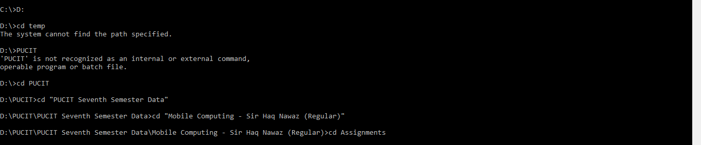

Git
But  is the most popular in the market with over 80 million users and a very large community.
is the most popular in the market with over 80 million users and a very large community.
How Git works?
Unlike the other version controll systems (CVS, Subversion, Bazzar) which stores your data in a files, Git has its own mehtod to track your history. Actually Git uses snaps to keep track of your file, so the story of Git is that it take snap of your code (Just as you take snap when you think you are looking pretty) when you commit. So in reality Git is storing a Stream of Snaps. To maintain its efficieny Git is smart enough to refer to the previous snap if your new snap matches with the previous one.
Initializing a Repository in an Existing Directory
If you have a project that is not under Version Controll System and now you want to put it under git, you first have to move to that Directory.
Now type:
$ git init
This will create a .git repository that will contain all the necessary repository files. At this point nothing is tracked in your project.
Git Status
You can use the git status command to know the status of your files in your git repository, you get the detail of all the commits and the tracked and untracked files.
$ git status